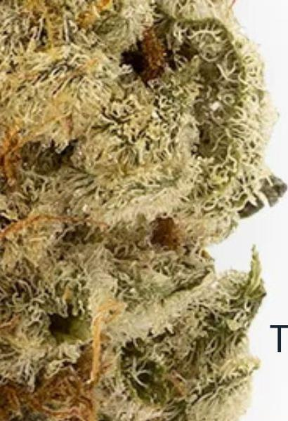

I grew up with, rather I was raised by, an uncle I shall refer to as Snoop. Around 2004/5, Snoop became and remains my hero. An important trait I inherited from my uncle is the ability to look out for others and to invest just as much in yourself, because you deserve it. It was very easy to see when Snoop was in love with something. He loved football and bought the jerseys. I believe his love of music plays a role in why I, too, have a strong musical palate.
Another thing that Snoop loved was spice. Back then, spice was mainly bush Swazi Gold and Durban Poison. Seeds were found aplenty in the spice of those days. Making the situation worse was the fact that pages from the Yellow Pages were used as rolling papers. With all that being said, Snoop went on to get a green spice leaf on his chest as the ultimate token of his affection for the sacred herb.
"Like Snoop, I too know what I like."
These days I am recognised as a bud connoisseur by my peers: like Snoop, I too know what I like. When I am discussed, it has become customary to attach caveats that my stuff is the most potent around, that my stuff rearranges days and unlocks new highs. In my defence, all of it is true, and I am on my own journey. I have taken what I saw Snoop do and now do it on a higher level. Bush kush is foul to me; it's because of the blessing of knowing what seedless means, what the difference between sativa and indica is, and what AAAA is. It is a new world here; it is a world of vapes, dabs, and all the many strains that are created every new day. As a result of all of this, I realised that I am missing the seal of approval of Snoop (who has since retired from the dooby game); that I took what he used to do and pushed it to another level.
I recently informed him that I would bring him out of retirement for a final gram he will enjoy alone and at his own leisure. I was able to get him Banana Cake AAA grade, which I trust to deliver my seal of approval with great jest. This is a small homage I can afford to give Snoop for a lifetime of a thankful life.
Banana Cake is known for its smell of honey, butter and diesel. It is well known that my favourite flavours are dominated by sweetness in anything that I consume. It is said that the effects we champion are reflective of our truest nature. This herb has top effects of relaxation, happiness and hunger. And I am a very relaxed, happy and indulgent human being.
Strain Notes
- Strain
- Banana Cake
- Grade
- AAA
- Aroma
- Honey, butter, diesel
- Top Effects
- Relaxation, happiness, hunger